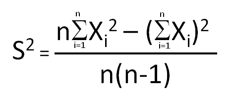
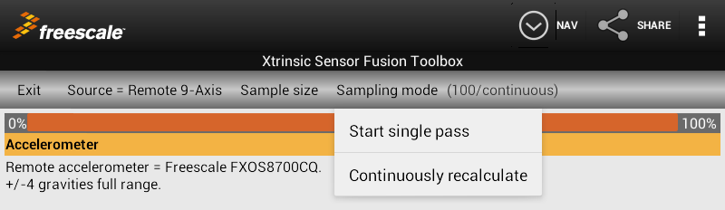

Obviously more samples means a longer test time. We use the classic equation for computation of variance as a function of sample size:  Recall that the standard deviation is the square root of the variance. It is "S" in the equation above.

A status bar is shown under the Fusion Settings Bar to indicate how far you are through your first sampling interval. Once you reach 100%, you can view statistics in HTML format via "Options Menu->View Statistics Report". You will then be presented with a selection of applications on your Android device capable of viewing that report. Alternately, you can "share" a copy of the stats report via the "Share" control in the Action Bar.
Notice that the application also computes the magnitude of each of the 3-axis sensor signals. This is especially useful for the accelerometer and magnetometer. Both sensors should ideally have fixed magnitudes, regardless of sensor orientation, when at rest. Variance in the magnitude of the magnetic field indicates one of two things:
The application also computes statistics on the duration between samples. Native Android implementations tend to be all over the map. This is due to the fact that Android is not (at least at the high API level) a real time system. Complex algorithms such as Kalman filters require an accurate timebase, which you will see is true of samples from your development board(s).
The Quaternion report includes a line item entitled "Angle". The entries on that line correspond to 2 X acos(q0). This is the angle magnitude component of the quaternion. Think of it as the "noise" associated with the computed orientation.
Note that sensor device information is NOT transmitted via the Bluetooth link. This application ASSUMES the FXAS21000 Gyro and FXOS8700CQ 6-axis combo device are used when running from Freescale development boards. This is true when using precompiled versions of Freescale's sensor fusion demo application. If you are using the Xtrinsic Sensor Fusion Library for Kinetis MCUs to program your own application, you can use other sensor combinations. This Android application can continue to be used, but the displayed sensor types will be incorrect.
Copyright 2013 by Freescale Semiconductor
Program version: 2013.05.07
Application settings:
Accelerometer
Sensor Description:
Remote accelerometer = Freescale FXOS8700CQ. +/-4 gravities full range.Sample quantity used for stats gathering: 100 (-1 for rate)
| Quantity | Value | Minimum | Mean | Maximum | StdDev | Units | /rtHz |
| X | -0.0620 | -0.0698 | -0.0633 | -0.0591 | 0.001919 | gravity | 0.000271 |
| Y | 0.0469 | 0.0410 | 0.0451 | 0.0483 | 0.001438 | gravity | 0.000203 |
| Z | 1.0176 | 1.0117 | 1.0166 | 1.0205 | 0.000628 | gravity | 0.000089 |
| Magnitude | 1.0205 | 1.0147 | 1.0196 | 1.0234 | 0.001570 | gravity | 0.000222 |
| Rates | 50.0948 | 49.8948 | 50.0021 | 50.1081 | 0.057431 | samples/sec | - |
Magnetometer
Sensor Description:
Remote magnetometer = Freescale FXOS8700CQ. +/-1200 microTeslas full range.Sample quantity used for stats gathering: 100 (-1 for rate)
| Quantity | Value | Minimum | Mean | Maximum | StdDev | Units | /rtHz |
| X | 25.0000 | 1.0000 | 16.9100 | 34.9000 | 6.793689 | microTeslas | 0.960753 |
| Y | 22.1000 | 18.6000 | 21.7350 | 24.5000 | 1.228389 | microTeslas | 0.173717 |
| Z | 14.0000 | 9.0000 | 16.1080 | 25.2000 | 3.142990 | microTeslas | 0.444477 |
| Magnitude | 36.1858 | 28.4290 | 32.6461 | 43.2760 | 3.019499 | microTeslas | 0.427013 |
| Rates | 50.0948 | 49.8948 | 50.0021 | 50.1081 | 0.057431 | samples/sec | - |
Gyroscope
Sensor Description:
Remote gyroscope = Freescale FXAS21000. +/-1600 dps full range.Sample quantity used for stats gathering: 100 (-1 for rate)
| Quantity | Value | Minimum | Mean | Maximum | StdDev | Units | /rtHz |
| X | -0.0017 | -0.0201 | -0.0041 | 0.0113 | 0.004995 | radians/sec | 0.000706 |
| Y | 0.0026 | -0.0009 | 0.0096 | 0.0218 | 0.004377 | radians/sec | 0.000619 |
| Z | 0.0113 | 0.0070 | 0.0173 | 0.0253 | 0.003469 | radians/sec | 0.000491 |
| Magnitude | 0.0118 | 0.0131 | 0.0213 | 0.0301 | 0.003370 | radians/sec | 0.000477 |
| Rates | 50.0948 | 49.8948 | 50.0021 | 50.1081 | 0.057431 | samples/sec | - |
Quaternion
Sample quantity used for stats gathering: 100
Sensor Description:
Quaternion sensor fusion by Freescale Semiconductor. 6 and 9-axis options are available.
| Quantity | Value | Minimum | Mean | Maximum | StdDev | Units | /rtHz |
| q0 | 0.9330 | 0.9350 | 0.9376 | 0.9403 | 0.001333 | cos(theta/2) | 0.000188 |
| X | 0.0109 | 0.0089 | 0.0101 | 0.0111 | 0.000442 | X sin(theta/2) | 0.000062 |
| Y | 0.0361 | 0.0359 | 0.0368 | 0.0378 | 0.000389 | Y sin(theta/2) | 0.000055 |
| Z | 0.3579 | 0.3381 | 0.3456 | 0.3527 | 0.003292 | Z sin(theta/2) | 0.000466 |
| Magnitude | 1.0000 | 1.0000 | 1.0000 | 1.0000 | 0.000000 | 0.000000 | |
| Angle | 0.7362 | 0.6944 | 0.7103 | 0.7252 | 0.006959 | radians | 0.000984 |
| Rates | 50.0948 | 49.8948 | 50.0021 | 50.1081 | 0.057431 | samples/sec | - |
Android device parameters
Continue to Hardware & Software Requirements.